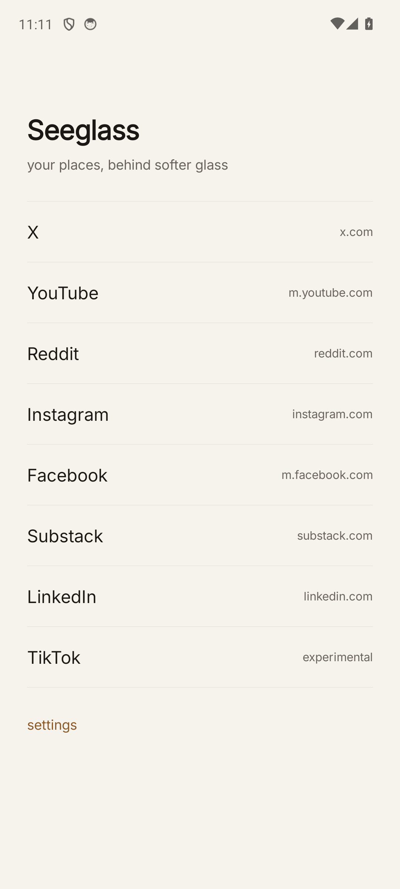
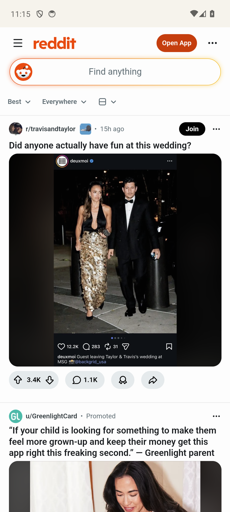
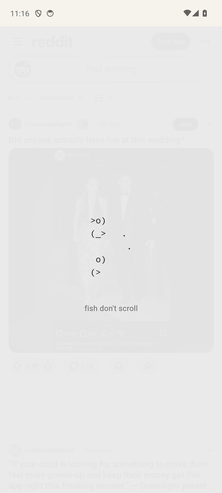
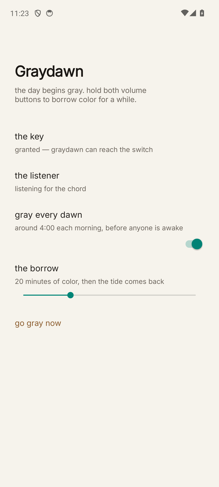

Two apps by morning
Seeglass
Your places, behind softer glass. Eight places on the shelf (X, YouTube, Reddit, Instagram, Facebook, Substack, LinkedIn, TikTok-experimental), each in its own WebView with persistent login. The care engine drives injected CSS: color drains smoothly over your ramp (default 20 min), space between posts grows, ASCII break cards surface gently. Nothing is removed by default — trims (YouTube Shorts shelf, IG Explore) are opt-in in settings. Demo mode previews the ramp at 20×.



Graydawn
The day begins gray. Around 4:00 each morning the whole phone goes grayscale (system daltonizer — every app, every pixel). Hold both volume buttons and color comes back for 20 minutes; a soft double-buzz warns 30 seconds before the tide returns. Verified end-to-end: dawn alarm scheduled, borrow flips color on, warning haptic fires, snap-back returns the gray.

Put them on the Pixel
Phone plugged in, USB debugging on:
cd ~/Desktop/PhoneThatCares/.claude/worktrees/seeglass-overnight/_context/seeglass-2026-07-05 adb install seeglass.apk adb install graydawn.apk adb shell pm grant com.ptc.graydawn android.permission.WRITE_SECURE_SETTINGS
Then open Graydawn once — it walks you through enabling the accessibility listener (Settings → Accessibility → Graydawn). That's the whole setup. The volume-chord needs real hardware keys, so it meets its first true test in your hands.
What fought back (worth knowing)
- The gradual system ramp is truly impossible without root — tested live,
not just researched. Android 14's color-correction intensity setting exists but is
ignored (SurfaceFlinger's matrix stays full-grayscale at every level), and the
root-only backdoor (
service call SurfaceFlinger 1015) returns operation not permitted from shell. Graydawn snaps; Seeglass ramps. Your moves-ladder held exactly. - Screenshots don't capture the daltonizer — if you screenshot a gray phone, the picture is in color. Slightly delightful, mostly a demo-video gotcha.
- "Sign in with Google" is blocked inside WebViews — X/Reddit via email login are fine; YouTube stays logged-out for now (still browsable). A Custom-Tab auth bounce is the known fix, backlogged.
- X shows its logged-out door first — sign in once and cookies persist.
- Instagram/TikTok load but got the least testing (no test accounts). File-upload + fullscreen-video + popup-link support all landed, so posting and video should work — first real session will tell.
Where things live
seeglass/andgraydawn/— full Kotlin projects at the repo root (worktree branch)./gradlew assembleDebugin either builds it (JDK 17 + Gradle now installed)- Emulator
ptc-testhas both installed and configured if you want to poke first
Backlog (not tonight, easy nexts)
- Custom-Tab Google auth for YouTube login
- Per-place ramp overrides; time-away reset tuning (30 min now)
- Graydawn: user-selectable chord + dawn time (fixed both-volume / 4:00 in v1)
- The pay-Brian tip jar (needs your Play Console for real billing)
- Play-listing pass: privacy policy, accessibility-use declaration, store copy
Seeglass — an addictive-shiny thing, tumbled soft. The name held up all night; it was a good choice.